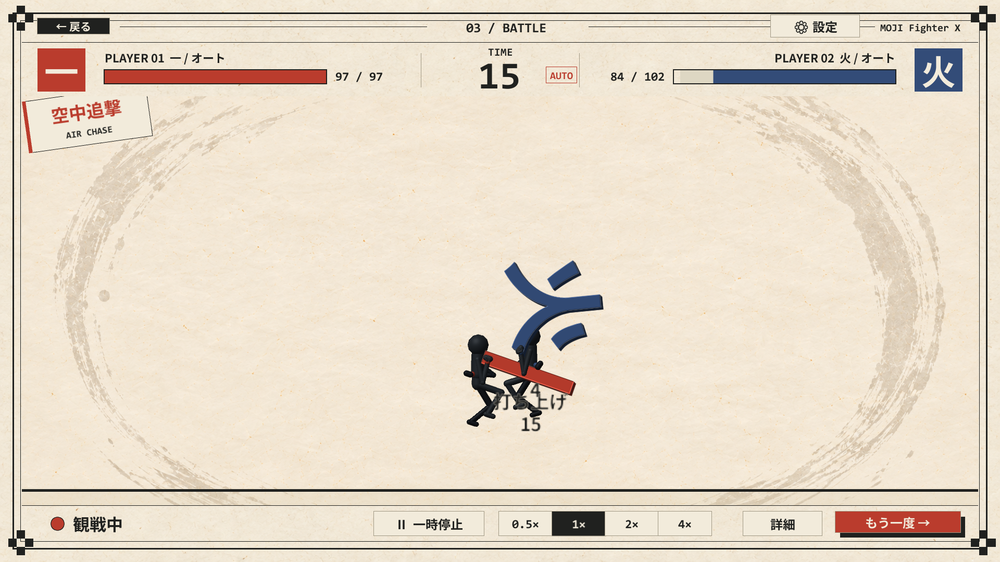
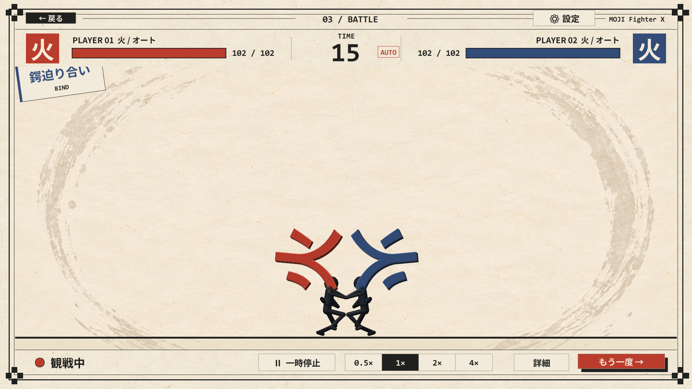
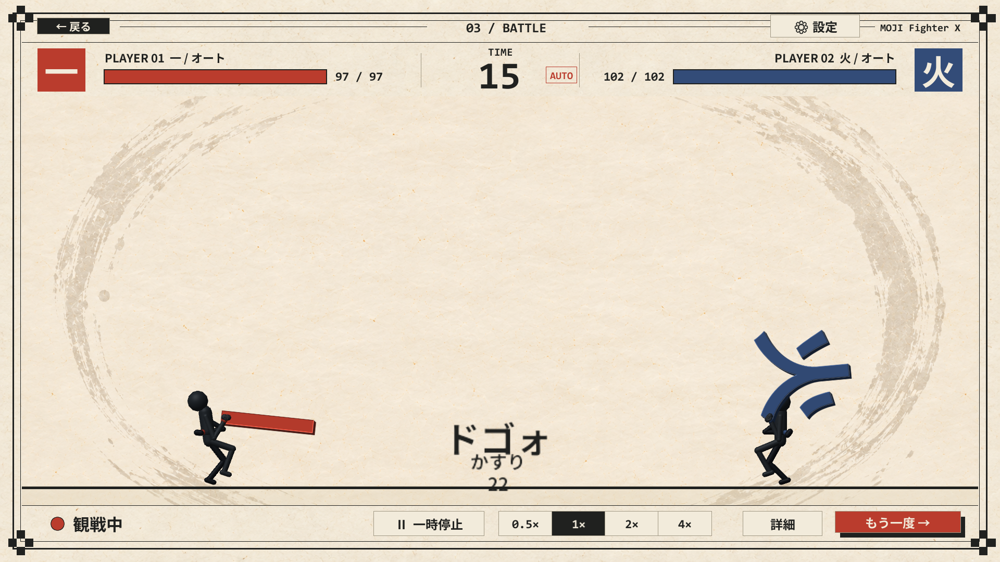
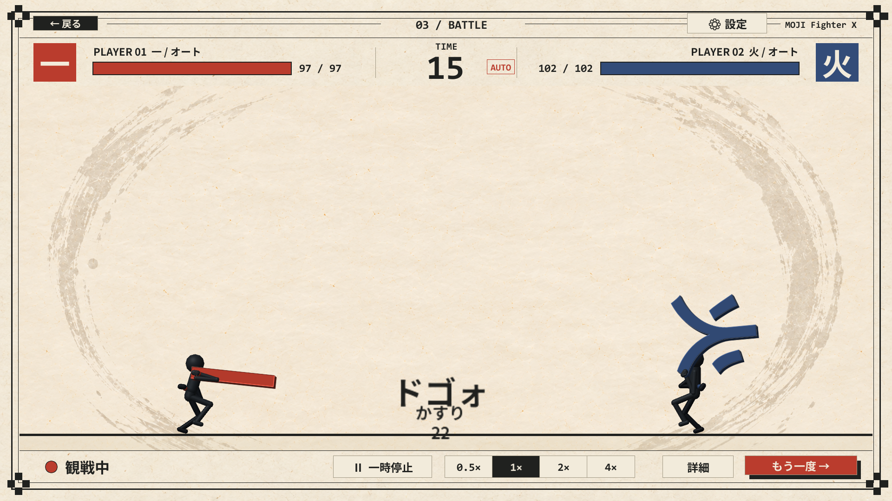
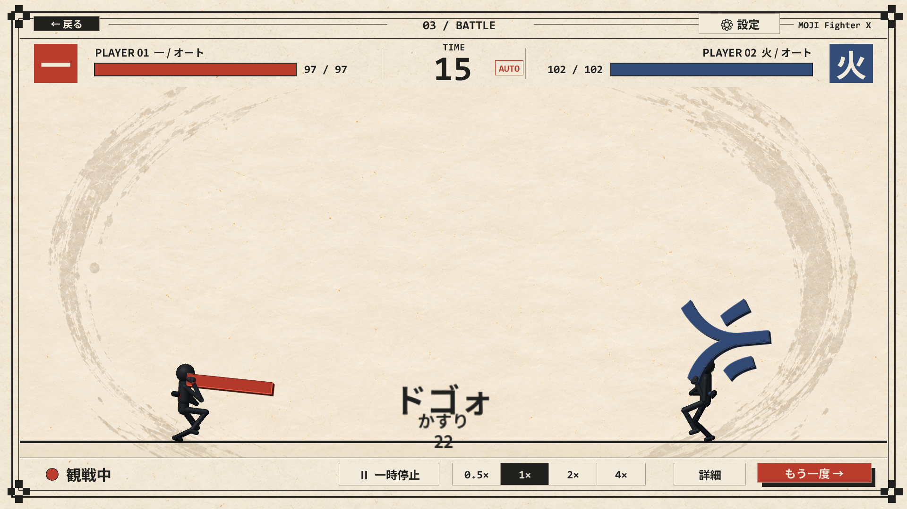
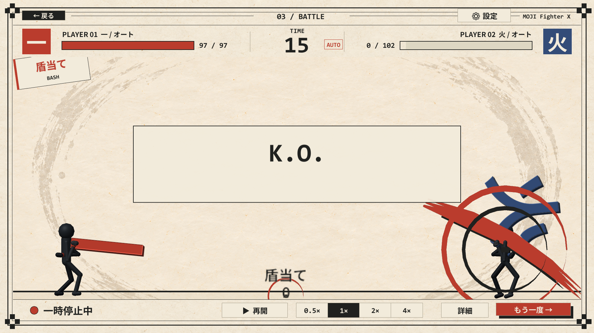
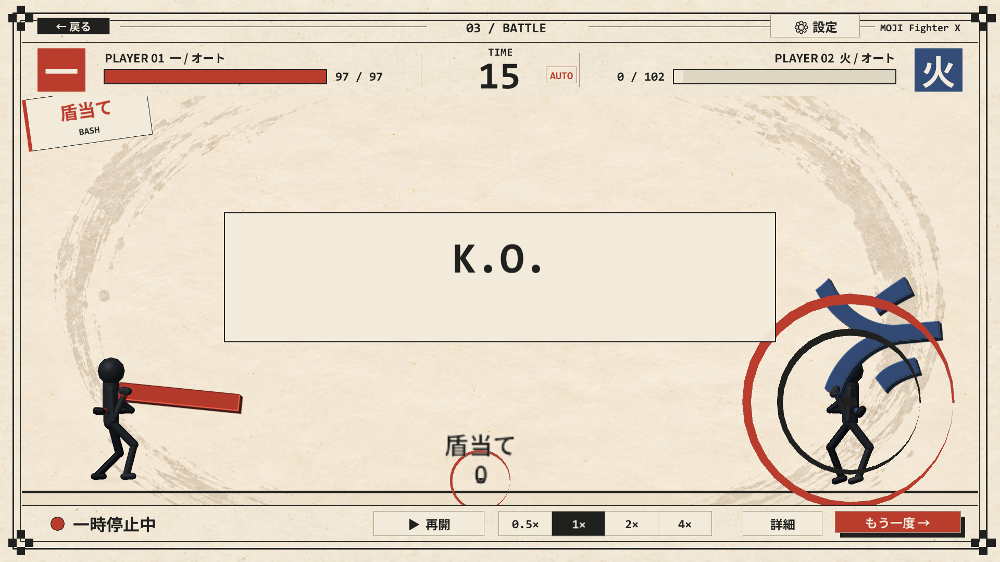
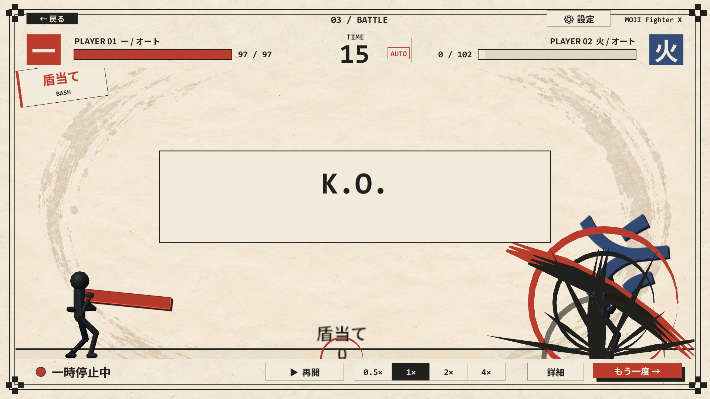

武器の重さを見せる全身モーション、部位別の被弾、空中追撃、鍔迫り合い後の反撃、紙と墨の演出、決まり手別のKO演出を追加しました。画像はUnityの実際の戦闘画面です。
関連する45項目のPlayMode検証が通過。検証結果 ／ 仕様と調整値
軽量・中量は空中追撃、重量級は地上からの豪快な叩き落とし。各段は一度だけ命中し、届かない・被弾・着地時は中断します。



頭：上体とのけぞり

胴：身体を折る

KOスローから短い静止を挟み、斬撃は大きな筆線、打撃は衝撃輪、地面への激突は墨柱へ切り替えます。撮影は衝撃が出た瞬間で、白フラッシュはすぐに減衰します。


